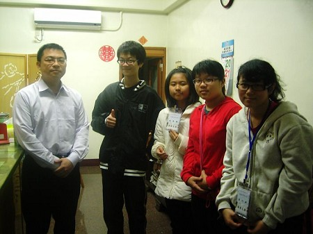
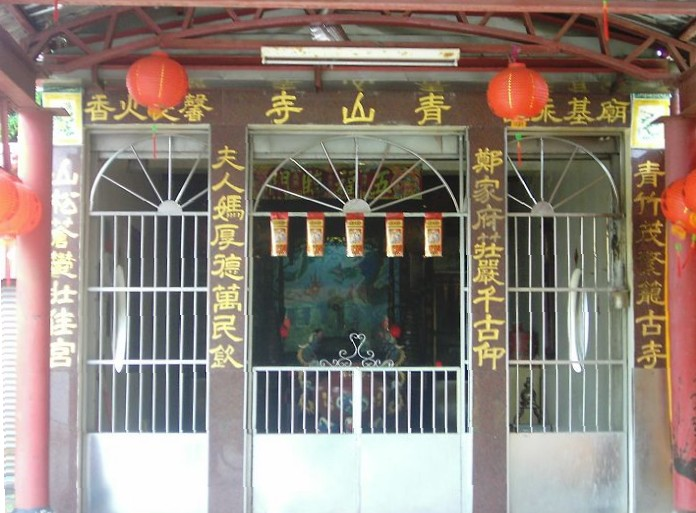
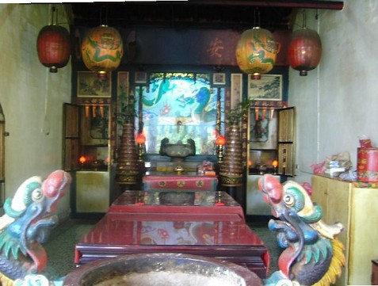

青山寺，全名「青山寺鄭夫人媽宮」
義務負責人:謝獻儀(負責12年)(下圖左一)

主祀神明的稱呼:夫人媽(又名線媽)，寺廟性質:民間寺廟(由當地民眾興起)，教別:道教 建別:勸募

青山寺鄭夫人媽宮建於清朝道光年間最早的一間寺廟，二十幾年前有重建，當時有人在溪裡撈到夫人牌，不知怎麼辦，後來決定蓋了這間廟，是在保護小孩，求治病的、女生出生求平安，16歲要帶這鞋子去供俸，之後還有民眾不想奉的神像就放在這一間廟中

農曆正月初九較熱鬧，十月十五也有慶典，在寺廟周圍由當地流傳的蛇穴，廟旁也有一顆大王樹，所以當地人堅信此風水良好，不能隨便移動
<--回下犁村首頁 |